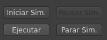

Establece la conexión con Vrep en la máquina configurada en las text boxes e inicia la simulación de forma remota. Si se quiere modificar el puerto es obligatorio cambiarlo también en el script lua asociado al modelo kh3_noplugin.ttm, que es el único modelo válido para su uso con KheperaSimGui.
Figura 12:
Botones Zona Superior
|

|
Daniel Peiró
2014-05-16